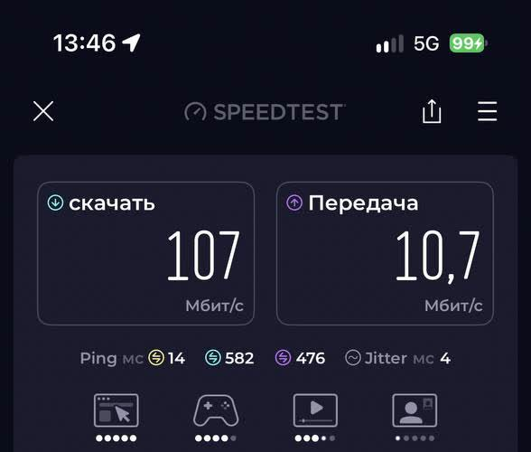
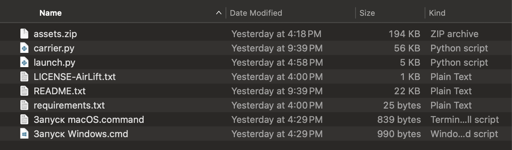
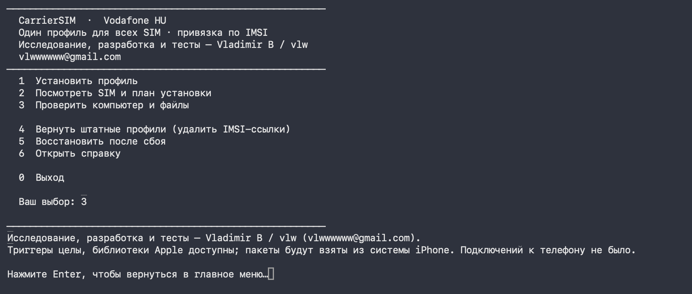

5G НА IPHONE.
ПО ШАГАМ.мой опыт
Способ для Беларуси и России через CarrierSIM. На iPhone 16 Pro с SIM МТС Беларусь после установки появился значок 5G.
Архив CarrierSIM v2 · Mac и Windows · 218 КБ

В двух словах
Пошаговая инструкция
Повторите на своём компьютере
Начните с подготовки. Затем выберите свою систему — остальные шаги одинаковые.
- 1
Подготовьте Mac
Установите Python 3.11 или новее. Он нужен программе, но команды вводить не придётся. Если Python уже установлен, переходите дальше.
- 2
Скачайте архив и распакуйте
Нажмите кнопку скачивания на этой странице. Откройте ZIP и перенесите всю папку CarrierSIM в «Загрузки». Не запускайте файл прямо из окна архива.
Скачать CarrierSIM v2 ↓ - 3
Подключите iPhone
Подключите телефон кабелем, разблокируйте, нажмите «Доверять этому компьютеру» и дождитесь, пока Finder завершит синхронизацию.
- 4
Откройте «Запуск macOS.command»
Откройте этот файл в папке CarrierSIM. При первом запуске программа установит свои компоненты — дождитесь появления русского меню. Если Mac заблокировал открытие, смотрите раздел «Если не получилось» ниже.

- 1
Подготовьте Windows
Установите Python 3.11 или новее, x64 и настольный iTunes для Windows x64 с сайта Apple с компонентами Apple. Версия из Microsoft Store и приложение Apple Devices не заявлены как поддерживаемые этим архивом.
- 2
Распакуйте архив полностью
Скачайте ZIP и извлеките всю папку CarrierSIM в «Загрузки» или другую папку, где можно сохранять файлы.
Скачать CarrierSIM v2 ↓ - 3
Подключите iPhone
Подключите кабелем, разблокируйте и нажмите «Доверять». Дождитесь окончания синхронизации iTunes.
- 4
Откройте «Запуск Windows.cmd»
Запустите файл двойным щелчком в распакованной папке. При первом запуске нужен интернет для установки компонентов программы.

На iPhone после установки
Проверьте результат
- Включите авиарежим на 15 секунд и выключите.
- Откройте «Настройки → Сотовая связь → нужная SIM → Голос и данные» и проверьте, появился ли пункт 5G.
- Проверьте мобильный интернет и обычный звонок. При наличии покрытия посмотрите, появился ли значок 5G в строке состояния.
Успешная установка профиля и пункт 5G в настройках не гарантируют подключение к сети 5G. Покрытие, оператор, тариф, модель и iOS влияют на результат. Способ не открывает все 5G-диапазоны.
Если что-то пошло не так
Частые вопросы
Mac не открывает файл запуска
Mac пишет «Permission denied»
chmod u+x с пробелом в конце, перетащите файл «Запуск macOS.command» в окно Terminal и нажмите Enter. Затем снова откройте файл двойным щелчком. Команда касается только выбранного файла.Программа не видит iPhone
В окне написано, что нужен Python или компоненты Apple
Установка прервалась
runs внутри CarrierSIM. Повторно откройте программу и выберите пункт 5 — «Восстановить после сбоя». Не публикуйте папку runs: в ней могут быть идентификаторы телефона и SIM.Как вернуть штатные настройки?
Профиль установился, а 5G нет
Вариант с ИИ-агентом
Попросить помочь с установкой
Агент с доступом к вашему компьютеру может помочь пройти подготовку и объяснить ошибки. Подтверждения на iPhone и проверка результата остаются за вами. Этот маршрут мы ещё отдельно проверяем.
Скопируйте запрос и приложите архив:
Помоги установить CarrierSIM на мой iPhone по README в приложенном архиве. Сначала проверь систему и зависимости, затем объясняй каждый шаг простыми словами. Перед изменением телефона покажи, какой iPhone и SIM найдены, и попроси меня подтвердить. Не публикуй мои идентификаторы и папку runs. После установки проверь вывод программы и объясни, как вернуть штатный профиль.